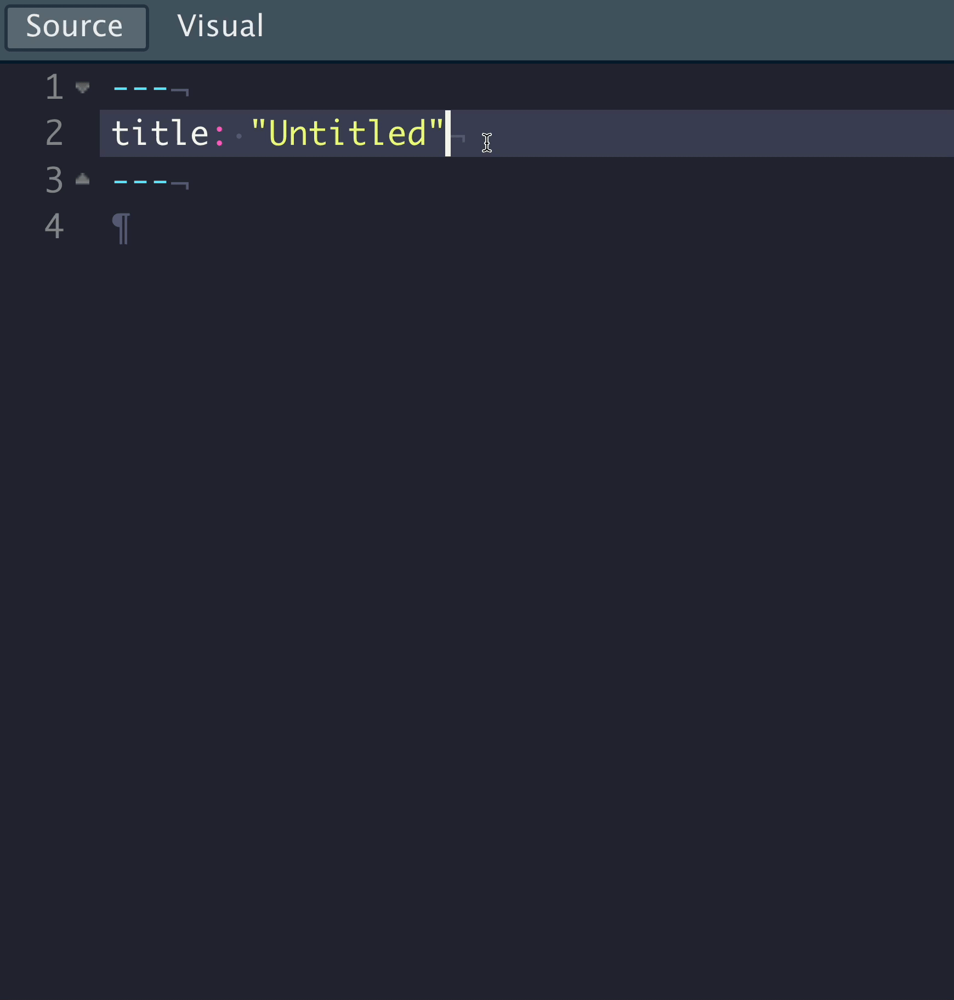

Execute code
One of the biggest similarities AND differences between Quarto and RMarkdown is how it handles native code.
Quarto uses the {knitr} engine just like RMarkdown to execute R code natively, along with many other languages.
Quarto can also use the Jupyter engine to natively execute Julia, Python, or other languages that Jupyter supports.


Start your engine!

Quarto’s hash pipe #|

Quarto chunk options
```{r}
#| warning: false
#| fig-cap: "Air Quality"
#| fig-alt: "A ggplot2 with temperature by ozone levels along with a trend line indicating the increase in temperature with increasing ozone levels."
library(ggplot2)
ggplot(airquality, aes(Ozone, Temp)) +
geom_point() +
geom_smooth(method = "loess", se = FALSE)
```
Air Quality
YAML Auto-completion
Quarto + RStudio provides a rich YAML auto-completion based on text.
 ## YAML Auto-completion
## YAML Auto-completion
To find all the available options for a YAML section, you can use Ctrl + Space

RStudio Visual Editor

Rendering
- Render in RStudio, starts a background job and previews the output

- System shell via
quarto render
- Renders via terminal
VS Code

VS Code YAML

VS Code, YAML Intelligence

Jupyter/Jupyter Lab

Jupyter
quarto preview notebook.ipynb --to html

Jupyter YAML
Treat YAML as a “raw cell” in Jupyter - Jupyter doesn’t care about YAML, but it’s needed/used by Quarto

Your Turn
thomasmock$ quarto --help
Usage: quarto
Version: 1.0.36
Description:
Quarto CLI
Options:
-h, --help - Show this help.
-V, --version - Show the version number for this program.
Commands:
render [input] [args...] - Render input file(s) to various document types.
preview [file] [args...] - Render and preview a document or website project.
serve [input] - Serve a Shiny interactive document.
create-project [dir] - Create a project for rendering multiple documents
convert <input> - Convert documents to alternate representations.
pandoc [args...] - Run the version of Pandoc embedded within Quarto.
run [script] [args...] - Run a TypeScript, R, Python, or Lua script.
install <type> [target] - Installs an extension or global dependency.
publish [provider] [path] - Publish a document or project. Available providers include:
check [target] - Verify correct functioning of Quarto installation.
help [command] - Show this help or the help of a sub-command.